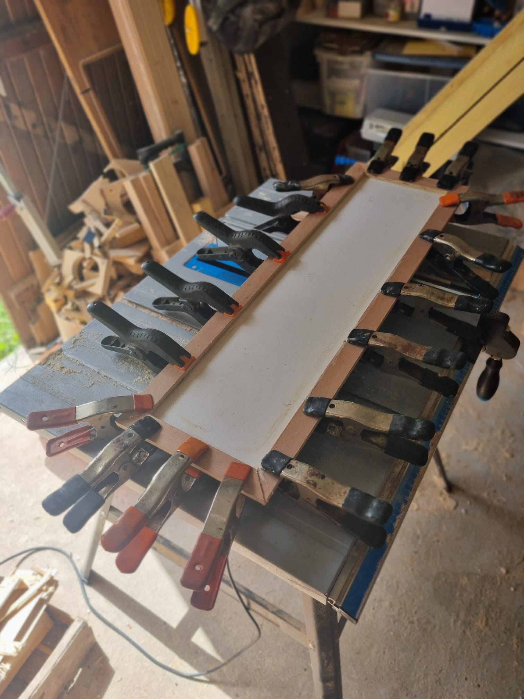
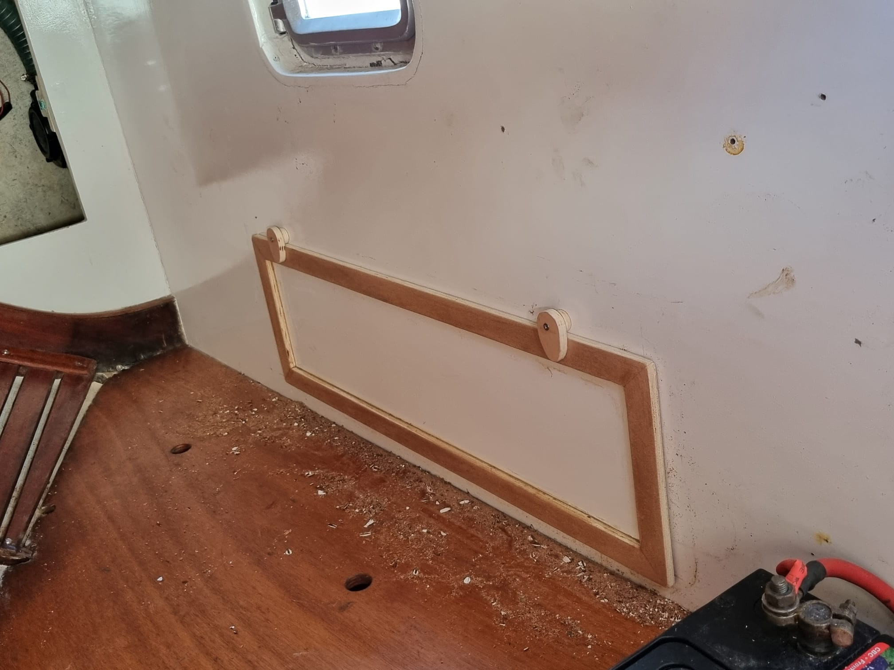
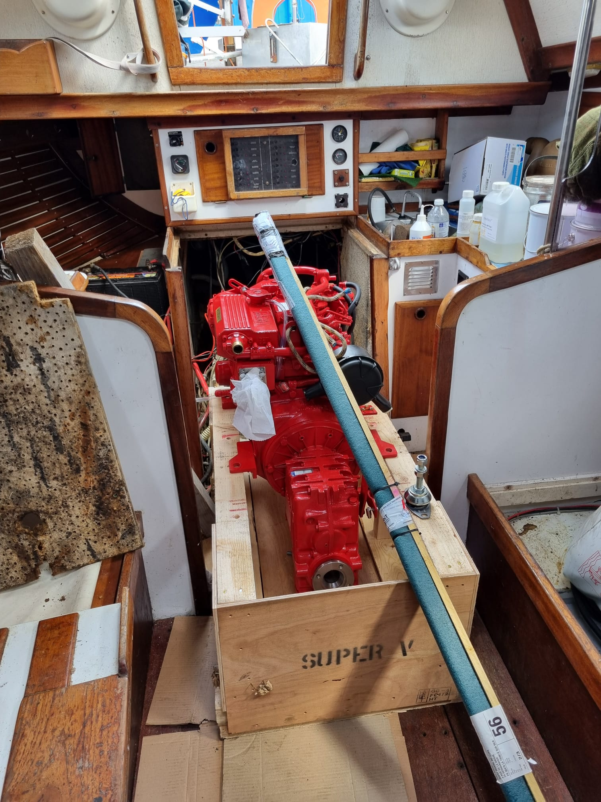
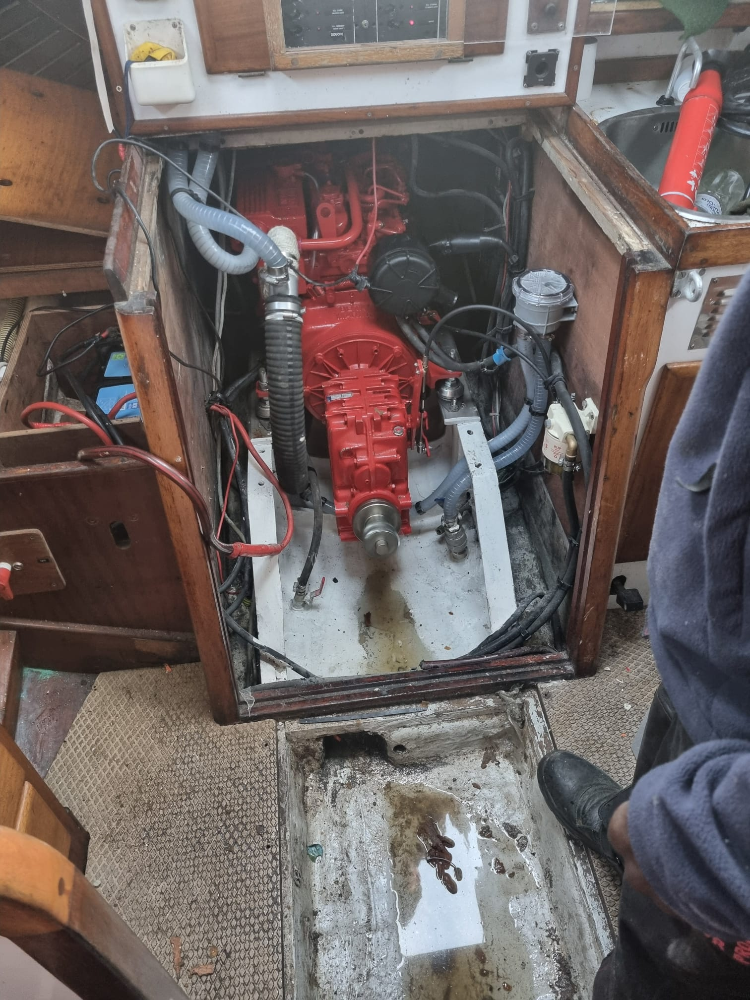
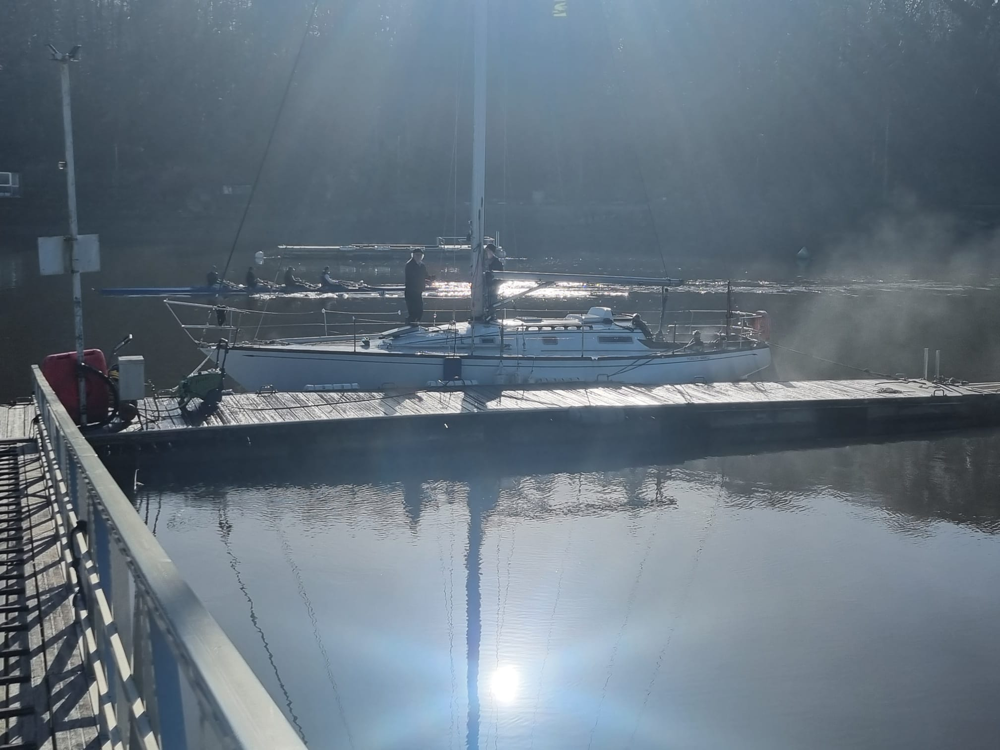
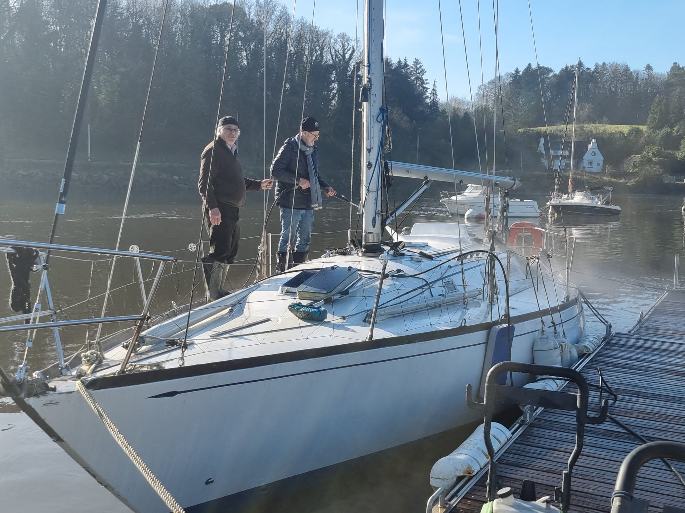
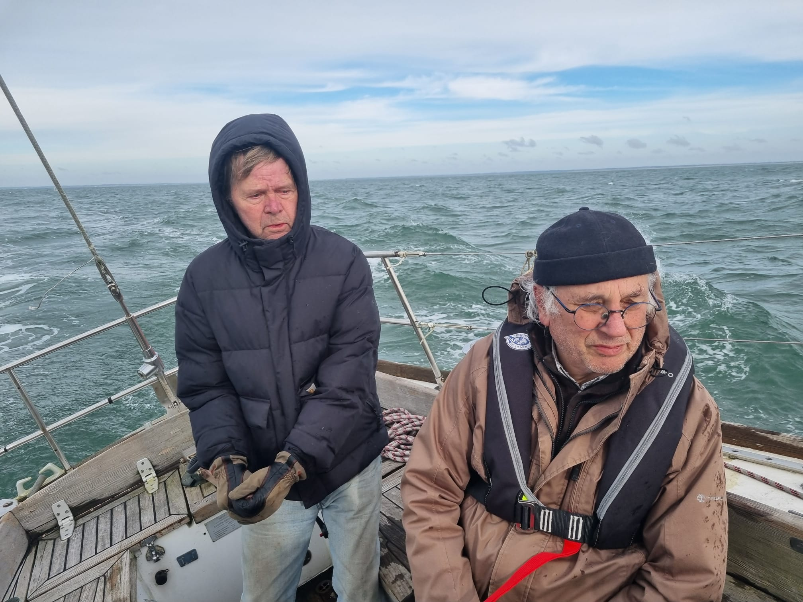
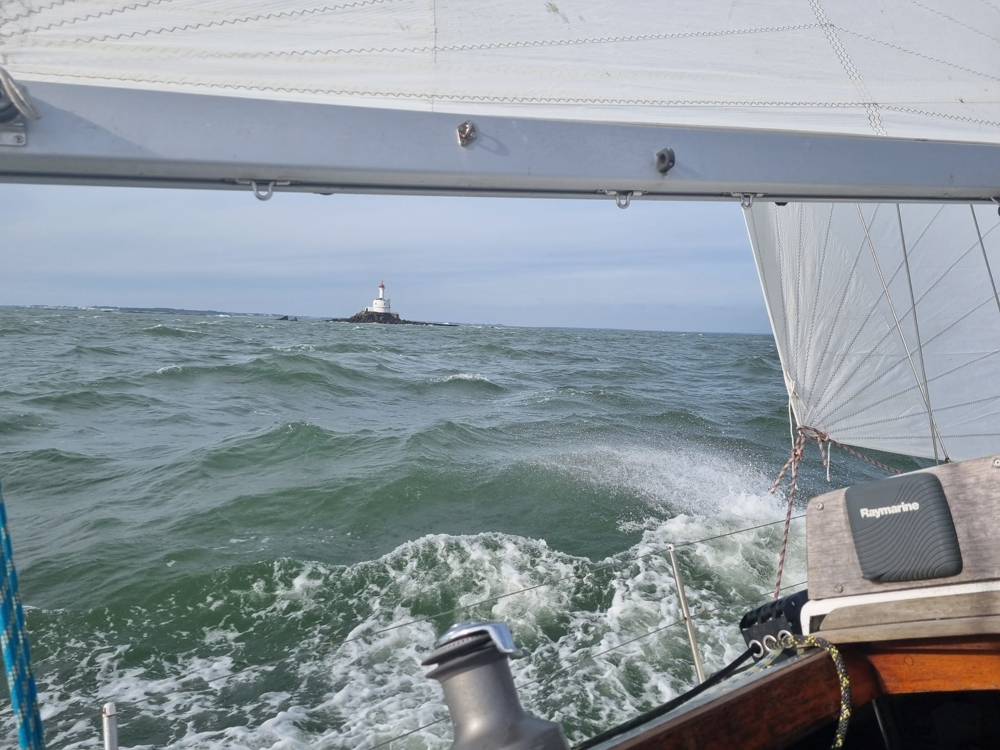
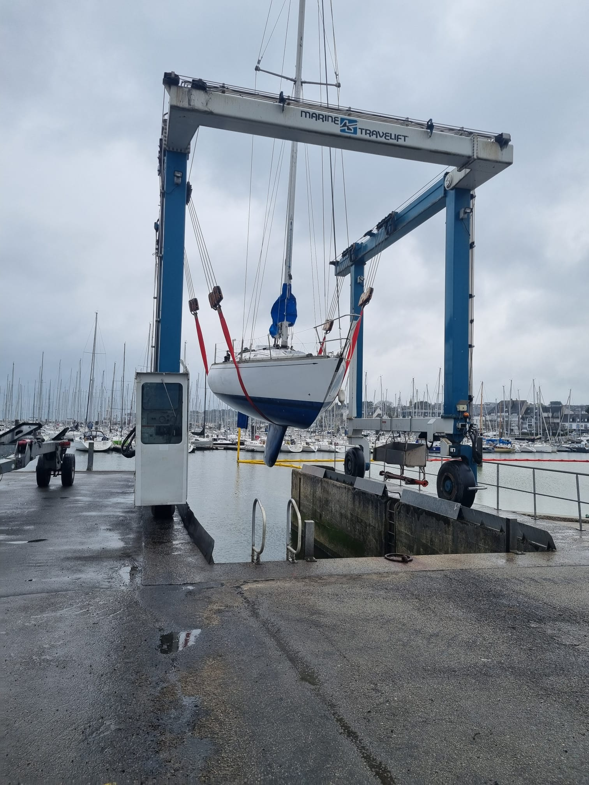
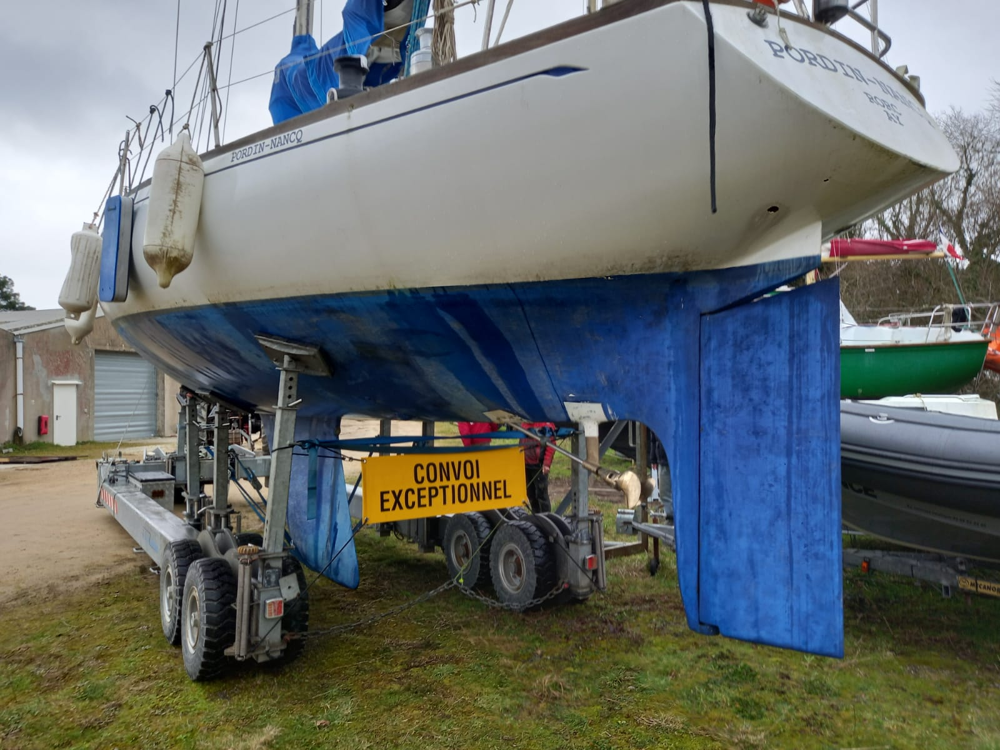

<div class="boat-card" header="Pordin-Nancq">
    <div style="min-height: 400px; overflow-y: auto;">
        <div class="tab" style="margin-top: 30px; margin-bottom: 10px; display: grid; grid-template-columns: auto auto auto auto auto auto auto auto auto auto auto;"> <!-- TODO Improve the grid-template... -->
            <button class="tablinks tab-active" onclick="openTab(event, 'pordin-01');" title="Summary">Summary</button>
            <button class="tablinks" onclick="openTab(event, 'pordin-02');" title="Details">Details</button>
            <button class="tablinks" onclick="openTab(event, 'pordin-03');" title="News">News</button>
            <button class="tablinks" onclick="openTab(event, 'pordin-04');" title="Support">Support the project</button>
        </div>
    
        <div style="min-height: 300px; max-height: 450px; overflow-y: auto;">
            <div id="pordin-01" class="tab-section" style="display: block;">
                <div style="display: grid; grid-template-columns: auto auto;">
                    
                    <div style="padding: 14px;">
                        <h2>Pordin Nancq</h2>
                        Carter 37, based in Locmiquelic<br/>
                    </div>
                </div>
                <div>
                    <h2>More info...</h2>
                    Referent: Jimmy<!--Pahun-->.<br/>
                    <!-- Tel: . . .<br/>
                    Email: . . . -->
                </div>
            </div>
            <div id="pordin-02" class="tab-section" style="display: none;">
                <div style="display: grid;">
                    <p style="line-height: 1.2em; margin-top: 10px;">
                        A legend of offshore racing of the 70s, to create a "revival" class, between the old wooden boats, and the all-carbon ones!<br/>
                        A mix of cultural and sustainable sporting project (no need to build a new boat to do the Spi Ouest).
                    </p>
                    <p style="line-height: 1.2em;">
                        Restart of a legendary boat with the support of a team of offshore racers with an impressive track record: 
                        Jimmy <!--Pahun--> (offshore racer and deputy), admiral Philippe Coindreau (creator of the naval school grand prize), 
                        Géry Trentesaux (vice-president of the YCF) and a few others to participate with this Carter 37 in a classic regatta circuit 
                        bringing together experienced and inexperienced crews.
                    </p>
                    <p style="line-height: 1.2em;">
                        Through this program we want to participate in the development of the vintage IRC gauge which allows old boats from the 70s to the 90s to 
                        race in an active class which promotes the use of high-performance boats, already existing and of historical and cultural interest.
                    </p>
                    <p style="line-height: 1.2em;">
                        Racing at a high level on these boats rather than always looking for the new boat is also a great example of the circular economy in sports sailing.
                    </p>
                    <p style="line-height: 1.2em;">
                        Pordin-Nancq is a legend of ocean racing and many famous sailors who have written the history of competitive sailing have sailed aboard her.<br/>
                        He notably participated in the 1979 Fasnet, with 2 knock-downs (complete turns, 180° heel, keel in the air!) and the original mast is still in place 34 years later.<br/> 
                        The sails are new, though!
                    </p>
                    <p style="line-height: 1.2em;">
                        In 2023, we welcomed its creator, the American architect Dick Carter, during 2 days of regattas and conferences, in La Trinité sur Mer.<br/>
                        This first Carter Cup organized by Passe&#8209;Coque was a great success.
                    </p>
                    <p style="text-align: center; margin-top: 10px;">
                        
                        <br/>
                        PJ&nbsp;Jannin, Yves&nbsp;Le&nbsp;Blevec, Jimmy<!--Pahun-->, Thierry&nbsp;Bujon&nbsp;de&nbsp;l'Estang, Jacques&nbsp;Philippe&nbsp;Roux,  Dick&nbsp;Carter, Jean-Yves&nbsp;Terlain
                    </p>
                </div>
            </div>
            <div id="pordin-03" class="tab-section" style="display: none; line-height: 1.2em;">
                <h2>February 2024</h2>
                <b>Replacement of the engine, at the Billie-Marine shipyard, in Hennebont.</b>
                <br/>
                A project we've been thinking about for a while... In the current configuration, the prop shaft comes out just behind the trailing 
                edge of the keel. To transmit the energy from the engine which is - as often - under the cockpit, there is a hydraulic reverser just in 
                front of the shaft - and just behind the mast foot, the prop's shaft coming out into the boat at this point; this thus involves 
                a whole system of hydraulic hoses between the engine reverser (which is behind the engine), and that of the 
                shaft (the one which is in front of the keel, behind the mast foot). With that, we also have all the weight that it causes, 
                and the oil leaks that go with it!<br/>
                We therefore plan to replace all this with a new engine and a V-Drive, which will turn a new shaft located between the keel and 
                the rudder - like on a normal boat!
                <br/>
                Must therefore:
                <ul>
                    <li>Disconnect and remove the current engine</li>
                    <li>Move the prop shaft, and add a chair</li>
                    <li>Install a new engine</li>
                    <li>Connect the new shaft to it (hence the V-Drive)</li>
                    <li>And There you go!</li>
                </ul>
                And we can also brush under the engine and in the bottom!
                <div style="display: grid; grid-template-columns: 50% 50%; margin-top: 5px;">
                    <div style="width: 95%; text-align: center;">
                        
                        <br/>
                        Current engine, disconnected.
                    </div>
                    <div style="width: 95%; text-align: center;">
                        
                        <br/>
                        Hydraulic inverter, dry!
                    </div>
                    <div style="width: 95%; text-align: center;">
                        
                        <br/>
                        It's mnoving...
                    </div>
                    <div style="width: 95%; text-align: center;">
                        
                        <br/>
                        It's out!
                    </div>
                    <div style="width: 95%; text-align: center;">
                        
                        <br/>
                        Engine compartment, empty!
                    </div>
                </div>
                <h4>Next steps</h4>
                <ul>
                    <li>Clean up the bilge (a project!)</li>
                    <li>Repaint</li>
                    <li>. . .</li>
                </ul>
                <h2>April 2024</h2>
                <b>Remplacement of the engine, moving on.</b>
                <br/>
                <div style="display: grid; grid-template-columns: 50% 50%; margin-top: 5px;">
                    <div style="width: 95%; text-align: center;">
                        
                        <br/>
                        Access to the back of the engine.<br/>
                        Limited in height, down by the berth, up by the floor of the cockpit.
                    </div>
                    <div style="width: 95%; text-align: center;">
                        
                        <br/>
                        It's drying out.
                    </div>
                    <div style="width: 95%; text-align: center;">
                        
                        <br/>
                        Closed.
                    </div>
                    <div style="width: 95%; text-align: center;">
                        
                        <br/>
                        New engine on board.
                    </div>
                </div>
                <h2>February 2025</h2>
                <b>Back in the water!</b>
                <br/>
                <div style="display: grid; grid-template-columns: 50% 50%; margin-top: 5px;">
                    <div style="width: 95%; text-align: center;">
                        
                        <br/>
                        Engine in place, running just fine, no vibration!
                        
                        <br/>
                        
                        <br/>
                        Karcher cleaning, the boat looks brand new!
                        <br/>
                        
                        <br/>
                        Delivery Hennebont-La Trinit&eacute;
                        <br/>
                        
                        <br/>
                        La Teignouse
                        <br/>
                        
                        <br/>
                        Haul out, La Trinit&eacute;
                        <br/>
                        
                        <br/>
                        On the hard in St Phil !
                    </div>
                </div>
            </div>
            <div id="pordin-04" class="tab-section" style="display: none;">
                <div style="display: grid; grid-template-columns: auto;">
                    <h2>Support the project</h2>
                    
                    <div style="padding: 14px;">
                        <a href="https://www.helloasso.com/associations/passe-coque-l-association-des-passeurs-d-ecoute/collectes/pordin-nancq-un-carter-historique" target="HelloAsso">Hello Asso</a>
                    </div>
                </div>
            </div>
        </div>
    </div>
</div>